De la deformación de la materia a la mecánica de fluidos, la reología de alimentos y una introducción aplicada al manejo de sólidos granulares y tolvas.
1. Introducción: de la fuerza aplicada al comportamiento de la materia
1.1 La materia como sistema mecánico
La mecánica no estudia solamente el movimiento de cuerpos idealmente rígidos. Cuando una fuerza actúa sobre un material real, las partículas que lo constituyen modifican sus posiciones relativas y aparecen fuerzas internas. Macroscópicamente observamos ese efecto como una deformación. La magnitud de la respuesta depende de la intensidad de la acción, de cómo se distribuye sobre la superficie, de la geometría del cuerpo y de las propiedades del material.
Esta idea permite establecer una continuidad conceptual con las unidades anteriores. La segunda ley de Newton sigue siendo válida para el movimiento global, pero ahora incorporamos otra pregunta: ¿qué ocurre dentro del material mientras las fuerzas actúan? Para responderla introducimos esfuerzo, deformación y, posteriormente, presión y viscosidad.
1.2 Sólidos, líquidos y gases: una clasificación mecánica
Un sólido tiende a conservar una forma definida porque puede sostener esfuerzos de corte mediante una deformación finita. Un líquido conserva aproximadamente su volumen pero no una forma propia: adopta la del recipiente y fluye ante un esfuerzo cortante sostenido. Un gas, además, puede cambiar apreciablemente su volumen y llenar el recipiente disponible. Serway destaca que esta clasificación depende también de la escala de tiempo: ciertos materiales que parecen sólidos durante un intervalo corto pueden fluir si se observan durante tiempos suficientemente largos.
En Tecnología de Alimentos esta observación es fundamental. Muchos productos se encuentran entre los modelos ideales: geles, masas, cremas, suspensiones y pastas pueden exhibir simultáneamente rasgos elásticos, viscosos o dependientes del tiempo. Por eso comenzaremos con modelos simples y luego señalaremos sus límites.
1.3 Hipótesis de medio continuo
En la mayor parte de la unidad consideraremos que el fluido puede describirse mediante propiedades definidas en cada punto —densidad, presión, velocidad y temperatura— sin seguir molécula por molécula. Esta aproximación de medio continuo es adecuada cuando la escala del equipo o de la tubería es muchísimo mayor que la separación molecular. Permite construir campos como \(P(x,y,z)\), \(\rho(x,y,z)\) y \(\vec v(x,y,z,t)\).
Idea de modelado. A lo largo de la unidad distinguiremos siempre entre el fenómeno real y el modelo empleado. Un fluido ideal, incompresible o sin viscosidad no es “el fluido real”, sino una simplificación útil bajo determinadas condiciones.
Base bibliográfica: Serway y Jewett, capítulos 12 y 14; Tippens, capítulos 13 y 15.
En las unidades anteriores la fuerza se estudió principalmente por su capacidad para modificar el movimiento. En esta unidad interesa otra consecuencia: una fuerza distribuida sobre una superficie puede producir deformación. Esta respuesta permite construir, de manera gradual, la diferencia entre un sólido y un fluido.
La transición es especialmente útil en Tecnología de Alimentos. Una masa puede estirarse, una fruta puede comprimirse, un yogur puede fluir lentamente, una salsa puede requerir un esfuerzo mínimo para comenzar a moverse y una harina puede desplazarse dentro de una tolva aun cuando no sea un fluido en sentido estricto.
Trabajaremos principalmente con un enfoque de medio continuo: describiremos el comportamiento global mediante variables como densidad, presión, velocidad, caudal y viscosidad. Cuando estudiemos polvos y granos al final de la unidad, señalaremos explícitamente dónde esa aproximación deja de ser suficiente.
Fuerzainteracción
Esfuerzofuerza/área
Deformaciónrespuesta
Fluidodeformación continua
Viscosidadflujo real
Presiónhidrostática
Caudalmovimiento
Polvosampliación
2. Objetivos de aprendizaje
Materia y deformación
Reconocer tracción, compresión, corte y deformación volumétrica.
Fluidos
Distinguir un sólido de un fluido e interpretar la viscosidad.
Hidrostática
Aplicar densidad, presión, Pascal y Arquímedes.
Hidrodinámica
Aplicar caudal, continuidad y Bernoulli identificando hipótesis.
Alimentos
Relacionar propiedades físicas con almacenamiento, bombeo, llenado, mezclado y transporte.
3. Esfuerzo y deformación
3.1 Fundamento físico: fuerzas internas, esfuerzo y deformación
Cuando aplicamos una fuerza externa a un cuerpo, el material desarrolla interacciones internas que se oponen al cambio de forma o de tamaño. Para describir esas acciones no alcanza con indicar solamente la fuerza total: una misma fuerza puede producir consecuencias muy diferentes si actúa sobre áreas distintas. Por eso se define el esfuerzo como fuerza por unidad de área.
Si la fuerza es perpendicular a la superficie aparece un esfuerzo normal. Según el sentido puede generar tracción —tendencia a alargar— o compresión —tendencia a acortar—. Si la fuerza es paralela a la superficie aparece esfuerzo cortante. En todos los casos la respuesta se expresa mediante una deformación relativa, que permite comparar cuerpos de diferentes tamaños.
Esfuerzo
Caracteriza la acción mecánica distribuida sobre una superficie. Tiene unidades de presión: \(N/m^2=Pa\).
Deformación
Describe el cambio relativo de dimensiones. Cocientes como \(\Delta L/L_0\) son adimensionales.
Rigidez
Los módulos elásticos relacionan esfuerzo y deformación dentro del régimen aproximadamente lineal.
3.2 Régimen elástico y ley de Hooke generalizada
Para esfuerzos suficientemente pequeños, muchos materiales presentan una zona en la que la deformación es aproximadamente proporcional al esfuerzo. En ese régimen puede escribirse conceptualmente:
El módulo de Young \(Y\) caracteriza cambios de longitud; el módulo de corte \(G\) o \(S\) caracteriza cambios de forma por cizalladura; y el módulo volumétrico \(B\) caracteriza cambios de volumen. Un módulo grande significa que se requiere un esfuerzo elevado para producir una deformación dada.
La proporcionalidad no es ilimitada. Si se supera el régimen elástico, la relación deja de ser lineal y el material puede quedar deformado de manera permanente. En esta unidad usaremos el modelo lineal sólo como puente conceptual hacia el comportamiento de fluidos.
Base bibliográfica: Tippens, propiedades elásticas de la materia; Serway, módulo de Young, corte y módulo volumétrico.
La misma fuerza puede producir efectos diferentes según el área sobre la que actúa y la dirección respecto de la superficie.
Apoyo visual
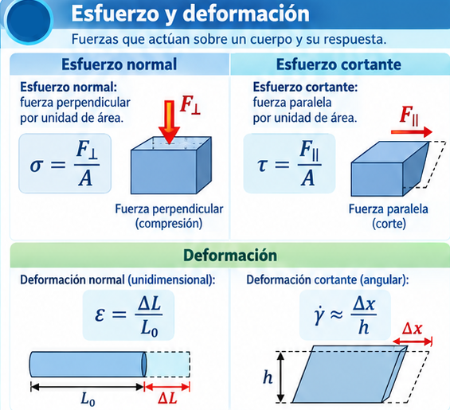
3.2.1 Esfuerzo normal, cortante y deformación
Este recorte resume la relación entre fuerza aplicada, área y deformación. Puede utilizarse para acompañar la lectura de las expresiones \(\sigma=F_\perp/A\), \(\tau=F_\parallel/A\) y \(\varepsilon=\Delta L/L_0\).
3.3 Esfuerzo normal
\[\boxed{\sigma=\frac{F_\perp}{A}}\]
Puede producir tracción o compresión. La deformación longitudinal relativa se define como:
\[\boxed{\varepsilon=\frac{\Delta L}{L_0}}\]
Dentro del régimen elástico, el módulo de Young vincula esfuerzo y deformación:
\[\boxed{Y=\frac{\sigma}{\varepsilon}}\]
3.4 Simulación 1 · Deformación normal y por corte
Compare tracción, compresión y corte. El dibujo exagera las deformaciones para hacerlas visibles.
Objetivo: relacionar una fuerza aplicada con el esfuerzo que genera y con la deformación resultante del material.
3.4.1 ⚙ Cómo funciona
Elija tracción, compresión o corte y modifique la fuerza, el área resistente y el módulo del material. El dibujo exagera la deformación para hacerla visible.
Para un comportamiento elástico simple, una mayor rigidez produce una menor deformación para el mismo esfuerzo.
3.4.2 👁 Qué debería observar
Si aumenta F, aumenta el esfuerzo y también la deformación.
Si aumenta A manteniendo F, el esfuerzo disminuye.
Si aumenta el módulo, el material se deforma menos.
En corte cambia principalmente la forma; en tracción/compresión cambia principalmente la longitud.
3.4.3 💡 Por qué ocurre
La misma fuerza distribuida sobre un área menor produce una acción mecánica más intensa. Por eso el esfuerzo depende de \(F/A\). El módulo representa la resistencia del material a deformarse: cuanto mayor es, más rígido es el material.
Prueba sugerida
3.4.4 🧪 Exploración
Fije F y el módulo. Reduzca el área a la mitad y compare el esfuerzo. Luego vuelva al área inicial y duplique el módulo. Explique cuál de los dos cambios modifica el esfuerzo y cuál modifica principalmente la deformación.
4. Deformaciones en una, dos y tres dimensiones
4.1 ¿Qué significa deformarse en más de una dimensión?
Una deformación real rara vez ocurre en una única dirección. Cuando una barra se estira longitudinalmente, por ejemplo, también puede contraerse lateralmente. En una lámina laminada o prensada cambian simultáneamente largo, ancho y espesor. Para el nivel de esta asignatura no necesitaremos describir matemáticamente todas esas componentes, pero sí distinguir tres respuestas básicas: cambio de longitud, cambio de forma y cambio de volumen.
4.2 Deformación volumétrica y compresibilidad
Si un material está sometido a una presión uniforme sobre su superficie, el efecto principal puede ser un cambio de volumen sin un cambio importante de forma. La deformación volumétrica se expresa mediante \(\Delta V/V_0\). El módulo volumétrico se define como la relación entre el incremento de presión y la disminución relativa de volumen:
\[B=-\frac{\Delta P}{\Delta V/V_0}\]
El signo negativo recuerda que un aumento de presión produce normalmente una disminución de volumen. El recíproco \(\kappa=1/B\) se denomina compresibilidad. Tippens y Serway señalan que tanto sólidos como líquidos tienen módulo volumétrico; en cambio, los líquidos no poseen un módulo de corte estático equivalente porque no sostienen una deformación cortante fija.
En la mayoría de las situaciones de transporte de líquidos alimentarios las variaciones de presión son demasiado pequeñas para cambiar apreciablemente el volumen. Por eso resulta razonable adoptar como primera aproximación \(\rho\approx constante\).
Base bibliográfica: Tippens, módulo volumétrico y compresibilidad; Serway, elasticidad del volumen.
4.3 Longitud
En un modelo unidimensional predomina el cambio de una longitud, como en una barra sometida a tracción o compresión.
4.4 Área
En una lámina pueden cambiar simultáneamente dos dimensiones. Un ejemplo alimentario es el laminado de una masa: disminuye el espesor y aumenta la extensión lateral.
4.5 Volumen
\[\boxed{\varepsilon_V=\frac{\Delta V}{V_0}}\]
Los líquidos suelen presentar cambios volumétricos muy pequeños frente a presiones moderadas, lo cual permite modelarlos en muchos problemas como incompresibles:
\[\boxed{\rho\approx\mathrm{constante}}\]
5. Deformación por corte
5.1 Interpretación geométrica del corte
El corte aparece cuando capas vecinas de un material tienden a desplazarse paralelamente entre sí. Imagine un bloque apoyado por su cara inferior mientras una fuerza horizontal actúa sobre la cara superior: el rectángulo original se transforma aproximadamente en un paralelogramo. El volumen puede cambiar muy poco, pero los ángulos internos sí cambian.
Para pequeñas deformaciones, el desplazamiento relativo \(\Delta x\) dividido por la altura \(h\) aproxima el ángulo de corte en radianes. Esta es la razón por la que \(\gamma=\Delta x/h\) es adimensional.
5.2 Módulo de corte en un sólido
\[G=\frac{\tau}{\gamma}\]
En un sólido elástico ideal, un esfuerzo cortante constante produce una deformación finita. Un valor elevado de \(G\) indica gran rigidez frente al cambio de forma. Esta relación es la contraparte cortante del módulo de Young.
5.3 El paso conceptual hacia un fluido
La diferencia decisiva aparece cuando el material no puede sostener ese esfuerzo cortante con una deformación fija. En un líquido, si el esfuerzo tangencial persiste, las capas continúan moviéndose unas respecto de otras: la deformación aumenta con el tiempo. A partir de aquí deja de ser suficiente estudiar \(\gamma\) y comenzamos a estudiar su rapidez de cambio \(\dot\gamma\).
Base bibliográfica: Serway, deformación de corte; Tippens, módulo de corte.
Cuando la fuerza actúa paralelamente a una superficie aparece un esfuerzo cortante:
En tres dimensiones pueden coexistir esfuerzos normales y tangenciales sobre distintos planos. Para esta asignatura no necesitamos introducir el formalismo tensorial; sí necesitamos comprender que el corte modifica principalmente la forma.
Apoyo visual · Esfuerzo normal, cortante y deformación
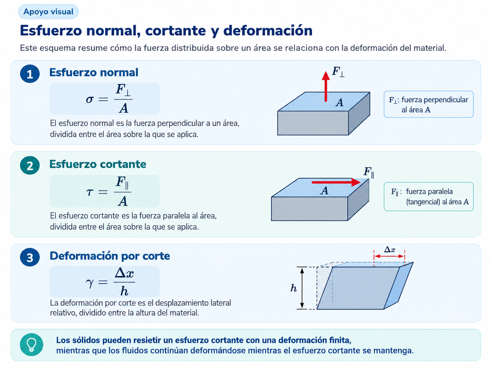
Doble clic sobre la imagen para verla ampliada.
Como cierre del punto 5, esta imagen reúne las tres ideas que permiten interpretar la respuesta mecánica de un material: el esfuerzo normal \(\sigma=F_\perp/A\), el esfuerzo cortante \( au=F_\parallel/A\) y la deformación por corte \(\gamma=\Delta x/h\). El esquema ayuda a distinguir la orientación de la fuerza aplicada y muestra por qué el corte modifica principalmente la forma del material. Esta comparación prepara el paso conceptual al punto siguiente: un sólido puede sostener un esfuerzo cortante mediante una deformación finita, mientras que un fluido continúa deformándose mientras ese esfuerzo se mantenga.
6. ¿Qué diferencia a un sólido de un fluido?
6.1 Definición mecánica de fluido
La definición más útil para esta unidad no se basa en si una sustancia “parece líquida”, sino en cómo responde a un esfuerzo cortante. Un sólido puede equilibrar un esfuerzo cortante mediante una deformación estática; un fluido no puede mantener ese equilibrio y se deforma continuamente mientras el esfuerzo exista.
Por esta razón, un fluido en reposo no puede tener esfuerzos cortantes permanentes. Las fuerzas que ejerce sobre una superficie son normales a ella. Este hecho será la base del concepto de presión en hidrostática.
6.2 Líquidos y gases
Tanto líquidos como gases se consideran fluidos, pero su comportamiento volumétrico es diferente. Los líquidos son poco compresibles en muchas condiciones habituales y poseen un volumen aproximadamente definido. Los gases son mucho más compresibles y su densidad puede cambiar significativamente cuando cambian presión o temperatura.
6.3 El tiempo de observación importa
Algunos materiales alimentarios no encajan perfectamente en una clasificación simple. Una pasta o un gel puede conservar su forma durante un intervalo y fluir cuando el esfuerzo supera cierto valor o cuando se mantiene durante suficiente tiempo. Esto anticipa la necesidad de distinguir entre modelos newtonianos y comportamientos reológicos más complejos.
Base bibliográfica: Serway, introducción a mecánica de fluidos y elasticidad; ampliación aplicada al contexto alimentario.
Comparación visual · Comportamiento ante un esfuerzo cortante
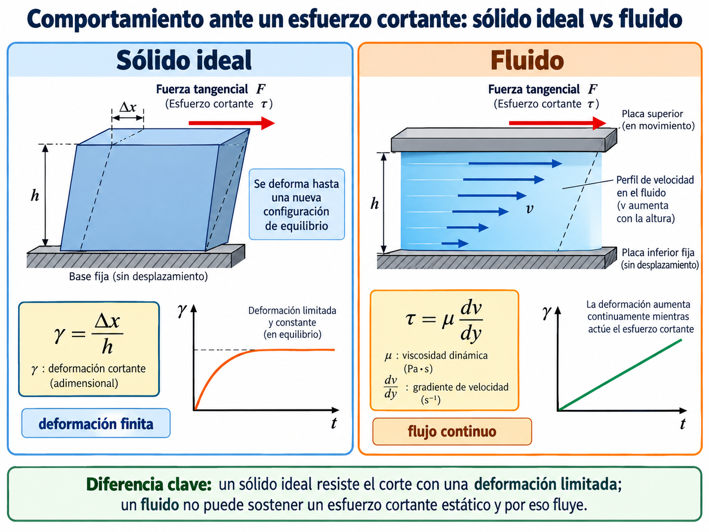
Doble clic sobre la imagen para verla ampliada.
La imagen resume de manera visual la diferencia mecánica fundamental entre un sólido ideal y un fluido cuando actúa un esfuerzo cortante. En el sólido ideal, la deformación angular \(\gamma\) crece hasta alcanzar un valor finito de equilibrio; es decir, el material resiste el corte mediante una deformación limitada. En cambio, el fluido no puede sostener un esfuerzo cortante estático: mientras el esfuerzo se mantenga aplicado, la deformación continúa aumentando y aparece un perfil de velocidades dentro del fluido. Por eso el bloque de la izquierda se interpreta con \(\gamma=\Delta x/h\), mientras que el de la derecha introduce la relación viscosa \( au=\mu\, dv/dy\), propia del flujo de un fluido newtoniano.
Definición mecánica. Un fluido se deforma continuamente cuando está sometido a un esfuerzo cortante sostenido.
Complemento audiovisual · Ensayo de tracción y respuesta mecánica del sólido
Video incorporado localmente al apunte. Referencia externa compartida: YouTube.
Descripción del video. El material audiovisual muestra un ensayo de tracción sobre una probeta de material sólido. La muestra es tomada por sus extremos y se le aplica una fuerza axial creciente. A medida que aumenta la carga, la probeta experimenta alargamiento y deformación, evidenciando que un sólido puede modificar sus dimensiones bajo la acción de fuerzas externas.
Procedimiento realizado. En forma simplificada, el procedimiento consiste en:
sujetar la probeta entre las mordazas de la máquina de ensayo;
aplicar una carga axial de tracción de manera progresiva y controlada;
observar el alargamiento producido y el cambio de la sección en la zona solicitada;
reconocer, según el material, una respuesta elástica inicial y eventualmente una etapa de deformación plástica antes de la rotura.
Relación con el tema. Aunque el video corresponde a tracción y no a corte, resulta útil para reforzar una idea clave del apunte: los sólidos pueden sostener esfuerzos y alcanzar una deformación finita de equilibrio o de carga, mientras que los fluidos no pueden sostener un esfuerzo cortante estático y por ello fluyen. Así, el ensayo actúa como contraste pedagógico frente al comportamiento del fluido mostrado en la infografía y en la simulación.
Objetivo: visualizar la diferencia fundamental entre la respuesta de un sólido elástico y la de un fluido frente a un esfuerzo cortante sostenido.
6.4.1 ⚙ Cómo funciona
Se aplica el mismo esfuerzo cortante \(\tau\) a dos materiales. En el sólido se utiliza un módulo de corte \(G\); en el fluido se utiliza una viscosidad \(\mu\). Pulse Iniciar para observar la evolución temporal.
El fluido continúa acumulando deformación mientras transcurre el tiempo.
Mayor \(\tau\) aumenta ambas respuestas.
Mayor \(G\) reduce la deformación del sólido; mayor \(\mu\) reduce la rapidez de deformación del fluido.
6.4.3 💡 Por qué ocurre
Un sólido puede equilibrar un esfuerzo cortante mediante una deformación finita. Un fluido no sostiene un esfuerzo cortante estático: mientras el esfuerzo permanezca, sus capas continúan desplazándose unas respecto de otras.
Prueba sugerida
6.4.4 🧪 Exploración
Mantenga \(\tau\) constante. Duplique \(G\) y observe el sólido. Luego vuelva al valor inicial y duplique \(\mu\). Compare qué cambia en cada material y justifique la diferencia.
7. Viscosidad y comportamiento reológico
7.1 Origen macroscópico de la viscosidad
Cuando capas contiguas de un fluido se mueven con velocidades diferentes, aparecen fuerzas internas que se oponen al deslizamiento relativo. Ese efecto se denomina viscosidad. Puede interpretarse macroscópicamente como una forma de fricción interna: parte de la energía mecánica asociada al movimiento ordenado del fluido se transforma en energía interna.
En un flujo entre placas paralelas, una placa en movimiento arrastra al fluido vecino mientras la otra permanece fija. Como consecuencia, se establece un perfil de velocidades. La rapidez del fluido cambia al desplazarnos en la dirección perpendicular al movimiento, y ese cambio se cuantifica mediante el gradiente \(dv/dy\).
En un fluido no sólo interesa cuánto se deformó, sino qué tan rápido se produce esa deformación. Para un corte simple puede escribirse:
El esquema permite visualizar el origen macroscópico de la deformación por corte en un fluido. La placa superior arrastra las capas próximas, mientras que la placa inferior permanece fija. Como la velocidad cambia con la coordenada transversal \(y\), aparece el gradiente \(dv/dy\), que mide localmente qué tan rápido se deforman unas capas respecto de otras.
7.2 Ley de Newton y viscosidad dinámica
Para un fluido newtoniano, bajo condiciones sencillas de flujo, el esfuerzo cortante es proporcional a la rapidez de deformación:
\[\boxed{\tau=\mu\frac{dv}{dy}=\mu\dot\gamma}\]
La constante de proporcionalidad \(\mu\) es la viscosidad dinámica. Si dos fluidos se someten al mismo gradiente de velocidad, el que posee mayor \(\mu\) requiere un esfuerzo cortante mayor. Inversamente, para un mismo esfuerzo, un fluido más viscoso desarrolla una rapidez de deformación menor.
En el Sistema Internacional, la viscosidad dinámica se expresa en:
\[ [\mu]=Pa\cdot s=N\cdot s/m^2 \]
7.3 Viscosidad cinemática
Otra magnitud utilizada para caracterizar el comportamiento viscoso es la viscosidad cinemática, definida como el cociente entre la viscosidad dinámica y la densidad:
\[\boxed{\nu=\frac{\mu}{\rho}}\]
Su unidad en el Sistema Internacional es \(m^2/s\). Mientras \(\mu\) representa directamente la resistencia viscosa al corte, \(
u\) incorpora también la densidad del fluido. Ambas magnitudes describen aspectos diferentes y no deben confundirse.
7.4 Influencia de la temperatura y de las condiciones de proceso
La viscosidad de un líquido depende de las condiciones en las que se encuentra. En muchos líquidos, el aumento de temperatura reduce la viscosidad porque facilita el movimiento relativo entre moléculas. Por ello, una línea que transporta un jarabe caliente puede presentar un comportamiento muy distinto cuando el producto se enfría.
En Tecnología de Alimentos también deben considerarse la composición, la concentración de sólidos y, para materiales no newtonianos, la rapidez de deformación. Por esta razón, un valor de viscosidad carece de parte de su significado si no se informa la temperatura y las condiciones bajo las cuales fue determinado.
Productos alimentarios
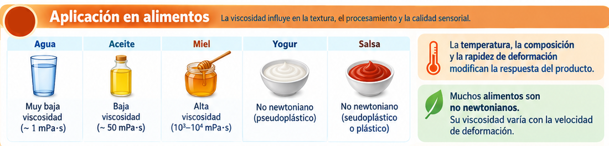
7.4.1 Viscosidad en fluidos alimentarios
La comparación entre agua, aceite, miel, yogur y salsa muestra que la viscosidad no es una propiedad que pueda interpretarse de manera aislada. En procesos alimentarios debe asociarse a la temperatura, la composición y, cuando el fluido es no newtoniano, a la rapidez de deformación. Por eso un mismo producto puede modificar de forma apreciable su comportamiento durante bombeo, mezclado, transporte o llenado.
Error frecuente. Un valor de viscosidad sin temperatura de referencia puede ser poco útil para interpretar un proceso real.
7.5 Fluidos newtonianos y no newtonianos
7.5.1 Fluido newtoniano
En un fluido newtoniano la relación entre esfuerzo cortante y rapidez de deformación es lineal. La viscosidad dinámica puede considerarse aproximadamente constante para las condiciones estudiadas:
\[\boxed{\tau=\mu\dot\gamma}\]
El agua y muchos aceites simples pueden aproximarse mediante este modelo dentro de determinados intervalos de temperatura y condiciones de operación.
7.5.2 Fluidos no newtonianos
En numerosos fluidos utilizados en Tecnología de Alimentos, la relación entre \( au\) y \(\dot\gamma\) no es lineal. En esos casos suele hablarse de viscosidad aparente, porque el valor efectivo de la resistencia al flujo depende de la condición de deformación y, en algunos materiales, también del tiempo.
Esto tiene consecuencias directas en el proceso: un fluido puede mostrar una elevada resistencia al movimiento en reposo y fluir con mayor facilidad durante bombeo o mezclado; otros sistemas pueden aumentar su resistencia a medida que aumenta la solicitación.
Comportamiento
Rasgo
Ejemplos orientativos
Newtoniano
\(\mu\) aproximadamente constante
Agua, aceites simples
Pseudoplástico
La viscosidad aparente disminuye al aumentar \(\dot\gamma\)
Yogur batido, salsas, purés
Dilatante
La viscosidad aparente aumenta con \(\dot\gamma\)
Suspensiones concentradas particulares
Con esfuerzo umbral
Requiere un esfuerzo mínimo para comenzar a fluir
Ketchup, cremas, pastas
Tixotrópico
La respuesta depende del tiempo de solicitación
Algunas salsas, geles y yogures
Lectura de proceso. En bombeo, llenado y mezclado no basta con preguntar “¿cuál es la viscosidad?”. También interesa saber a qué temperatura y bajo qué condición de deformación se midió.
Base bibliográfica: Serway y Young/Freedman para viscosidad y flujo viscoso; clasificación no newtoniana presentada como ampliación aplicada a alimentos.
Apoyo visual · Fluidos newtonianos vs no newtonianos
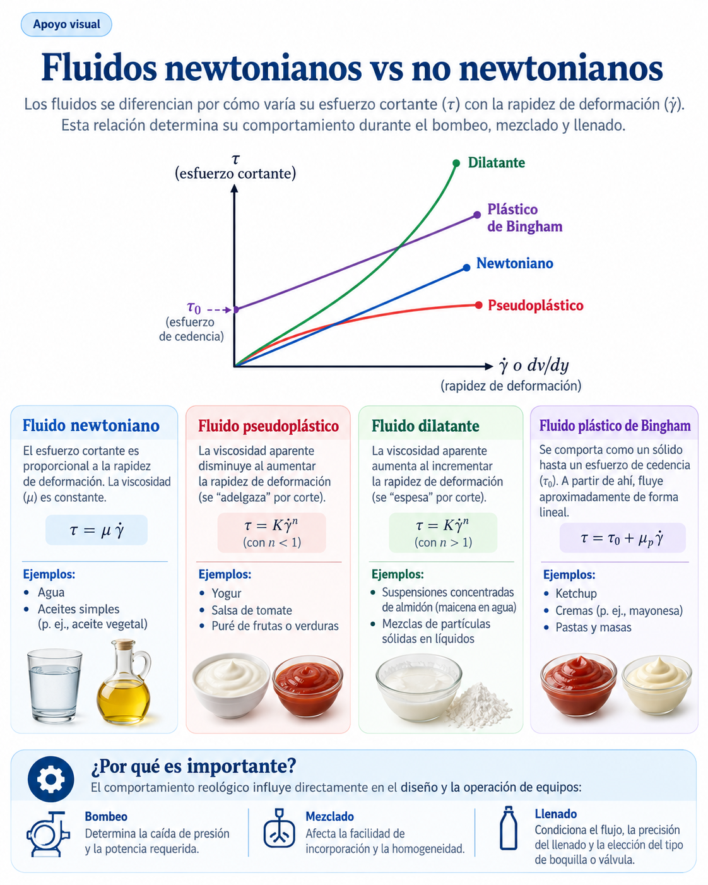
Doble clic sobre la imagen para verla ampliada.
Esta imagen funciona como cierre del punto 7.5. Resume en un único esquema cómo se relacionan el esfuerzo cortante \( au\) y la rapidez de deformación \(\dot\gamma\) para distintos comportamientos reológicos. El caso newtoniano aparece como una relación lineal de pendiente constante; el pseudoplástico muestra una viscosidad aparente decreciente; el dilatante presenta una viscosidad aparente creciente; y el plástico de Bingham requiere un esfuerzo de cedencia antes de comenzar a fluir. Los ejemplos alimentarios incluidos ayudan a vincular la teoría con productos concretos y con decisiones de bombeo, mezclado y llenado.
7.6 Importancia tecnológica
El conocimiento del comportamiento viscoso y reológico resulta necesario para interpretar y diseñar operaciones como bombeo, mezclado, agitación, llenado, dosificación y transferencia de calor. No alcanza con conocer un único valor de viscosidad: también interesa bajo qué temperatura, composición y condición de deformación se obtuvo.
7.7 Ensayos de textura y consistencia en alimentos (video complementario)
Como complemento aplicado, el siguiente video presenta distintos ensayos mecánicos y de textura utilizados para caracterizar alimentos. Estos ensayos permiten cuantificar propiedades como firmeza, consistencia, resistencia al corte, elasticidad, adhesividad o comportamiento durante la compresión. El objetivo didáctico no es memorizar nombres aislados, sino reconocer qué magnitud se intenta medir y cómo esa información ayuda a interpretar la calidad sensorial y el comportamiento del producto en proceso.
Video · Ensayos aplicados sobre alimentos
Lectura general del video. En este tipo de demostraciones se observa cómo una sonda o accesorio del equipo aplica una carga controlada sobre el alimento y registra la respuesta del material: fuerza, desplazamiento, tiempo y, según el caso, fractura, recuperación o flujo. A partir de esas curvas se interpretan propiedades físicas de interés tecnológico y sensorial.
Compresión
Se presiona la muestra entre una plataforma y una sonda. Permite estimar firmeza, dureza o resistencia a la compresión. Es frecuente en frutas, geles, panes y productos estructurados.
Penetración o punción
Una punta o cilindro penetra el alimento. Se utiliza para medir dureza local, consistencia superficial o resistencia de la corteza, por ejemplo en quesos, frutas, geles y productos horneados.
Corte
Una cuchilla atraviesa la muestra y se registra la fuerza necesaria. Informa sobre la resistencia al corte y se asocia con la textura de carnes, vegetales, pastas o productos fibrosos.
Doble compresión (TPA)
La muestra se comprime dos veces sucesivas para imitar parcialmente la masticación. A partir de la curva se estiman parámetros como dureza, elasticidad, cohesividad, gomosidad y masticabilidad.
Extrusión / back extrusion
Se fuerza el producto a fluir alrededor de un émbolo o a través de una geometría determinada. Este ensayo es útil para pastas, purés, yogures y salsas, y permite comparar consistencia, viscosidad aparente y resistencia al flujo.
Adhesividad
Se evalúa la fuerza o el trabajo necesarios para separar la sonda del alimento luego del contacto. Describe el grado de pegajosidad del producto, importante en cremas, pastas, dulces y geles.
Interpretación tecnológica. Estos ensayos conectan la física con la práctica profesional: permiten relacionar la estructura interna del alimento con su respuesta durante bombeo, llenado, mezclado, manipulación, envasado y aceptación sensorial.
7.8 Simulación 3 · Viscosidad entre placas
Objetivo: interpretar la viscosidad como la relación entre esfuerzo cortante y gradiente de velocidad en un flujo entre placas.
7.8.1 ⚙ Cómo funciona
La placa inferior permanece fija y la superior se mueve a velocidad \(U\). Se supone adherencia del fluido a las paredes y un perfil lineal de velocidad, típico del flujo de Couette ideal.
Puede elegir distintos productos para modificar \(\mu\).
7.8.2 👁 Qué debería observar
La velocidad es aproximadamente cero junto a la placa fija y máxima junto a la placa móvil.
Si aumenta \(U\), aumenta el gradiente de velocidad.
Si disminuye \(h\), el gradiente aumenta.
Para el mismo \(U/h\), un producto con mayor \(\mu\) necesita mayor esfuerzo cortante.
7.8.3 💡 Por qué ocurre
Las capas del fluido se mueven a velocidades distintas. La viscosidad cuantifica la resistencia interna a ese movimiento relativo. Por eso miel o jarabe requieren esfuerzos mucho mayores que agua para producir un gradiente similar.
Prueba sugerida
7.8.4 🧪 Exploración
Deje fija la geometría y compare agua con miel. Luego mantenga el producto y reduzca a la mitad la separación entre placas. Prediga antes de mover el control cómo cambiará \(\tau\).
Infografía · Corte, deformación y viscosidad
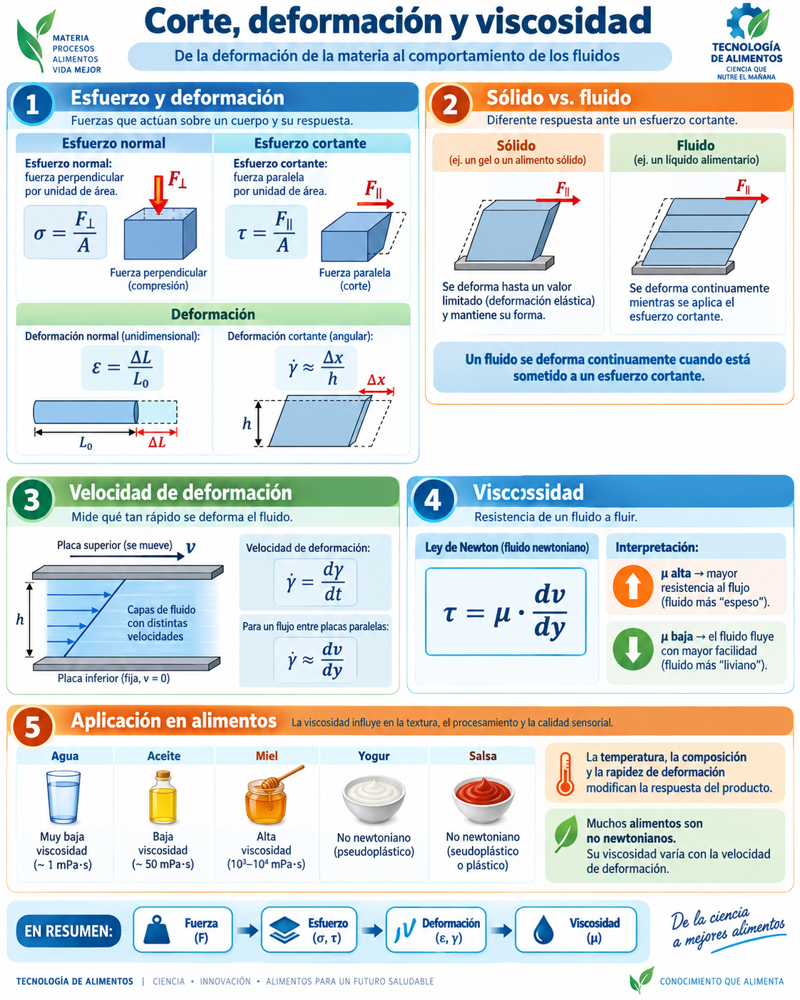
Doble clic para ampliar.
Esta síntesis conecta fuerza, esfuerzo, deformación y corte con la definición mecánica de fluido. El objetivo es que el estudiante visualice que la viscosidad no aparece como una fórmula aislada, sino como la respuesta del material al movimiento relativo entre capas. Los ejemplos de agua, aceite, miel, yogur y salsa ayudan a vincular el modelo físico con productos reales.
Infografía · Viscosidad y fluidos no newtonianos en alimentos
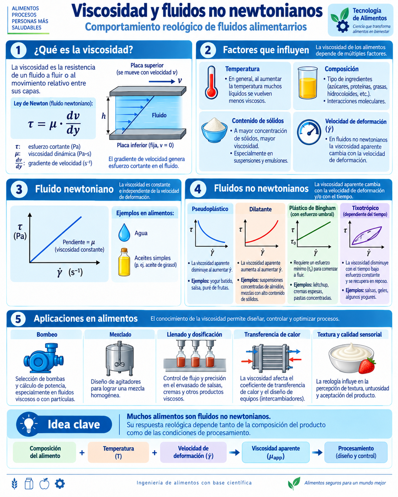
Doble clic para ampliar.
Esta segunda infografía profundiza la parte reológica: muestra la ley de Newton para fluidos newtonianos, los factores que modifican la viscosidad y las diferencias entre comportamientos pseudoplástico, dilatante, plástico de Bingham y tixotrópico. La lectura tecnológica se completa con su impacto en bombeo, mezclado, llenado, transferencia térmica y calidad sensorial.
8. Densidad y peso específico
8.1 Significado físico de la densidad
La densidad expresa cuánta masa está contenida en una unidad de volumen. Es una propiedad intensiva: no depende de la cantidad total de muestra, aunque sí puede depender de temperatura, presión y composición. Dos recipientes con diferentes volúmenes del mismo líquido, bajo las mismas condiciones, tienen la misma densidad.
La definición \(\rho=m/V\) permite pasar de una descripción geométrica de un fluido a una descripción mecánica. Por ejemplo, una columna de líquido de volumen \(Ah\) tiene masa \(m=\rho Ah\) y peso \(W=\rho Ahg\). Esta relación será la base de la ecuación hidrostática.
8.2 Valores de referencia de densidad
La siguiente tabla reúne valores de densidad de sustancias y materiales de uso frecuente en física, junto con algunos ejemplos de interés para Tecnología de Alimentos. Los valores deben interpretarse como referencias aproximadas: la densidad puede variar con la temperatura, la presión, la concentración y la composición del material.
Estado / categoría
Material o sustancia
Densidad aproximada \(\rho\) (kg/m³)
Referencia / comentario
Gases
Hidrógeno
0,0899
Condiciones estándar
Helio
0,179
Condiciones estándar
Aire
1,29
Aproximadamente a 0 °C y presión atmosférica
Oxígeno
1,43
Condiciones estándar
Líquidos / fluidos
Alcohol etílico
806
Valor de referencia
Benceno
879
Valor de referencia
Agua pura
1000
Referencia habitual para densidad relativa
Agua de mar
1030
Mayor que el agua dulce por sales disueltas
Glicerina
1260
Fluido relativamente denso y viscoso
Mercurio
13 600
Líquido metálico de alta densidad
Aceite de referencia del texto
850
Ejemplo de flujo incompresible
Sólidos
Pino
373
Madera de baja densidad
Roble
710
Madera más densa que el pino
Hielo
917
Menor densidad que el agua líquida
Aluminio
2700
Metal liviano
Hierro
7860
Valor típico de referencia
Cobre
8920
Metal de alta densidad
Plomo
11 300
Metal muy denso
Ejemplos de interés alimentario
Agua
1000
Base de numerosos alimentos y bebidas
Aceite (ejemplo de referencia)
850
Útil para comparar con agua en problemas de transporte
Melaza
1600
Ejemplo de fluido alimentario de alta densidad
Glicerina
1260
Referencia útil para comparar fluidos densos y viscosos
Lectura rápida. Los gases poseen densidades del orden de unidades de \(kg/m^3\), mientras que líquidos y sólidos suelen encontrarse en el orden de \(10^3\,kg/m^3\). En alimentos, diferencias relativamente pequeñas de densidad pueden ser importantes para flotación, separación de fases, control de concentración y conversión entre caudal volumétrico y caudal másico.
Importante. Para un producto alimentario real no conviene usar una densidad tabulada sin indicar las condiciones de medición. Temperatura, concentración de sólidos, contenido de aire y composición pueden modificar el valor.
8.3 Densidad, peso específico y densidad relativa
El peso específico \(\gamma=\rho g\) es una fuerza por unidad de volumen, mientras que \(\rho\) es masa por unidad de volumen. También puede utilizarse la densidad relativa o gravedad específica, definida como el cociente entre la densidad de una sustancia y una densidad de referencia; al ser un cociente de densidades, no tiene unidades.
Aplicación alimentaria. La densidad interviene en balances de masa, medición de concentración, flotación, separación de fases y conversión entre caudal volumétrico y caudal másico.
Base bibliográfica: Tippens, sección 15.1; mecánica de fluidos en Serway/Young-Freedman.
\[\boxed{\rho=\frac{m}{V}}\qquad [\rho]=kg/m^3\]
El peso específico se define como peso por unidad de volumen:
\[\boxed{\gamma=\rho g}\qquad [\gamma]=N/m^3\]
Error frecuente. Densidad y peso específico no son la misma magnitud.
9. Presión
9.1 Presión como magnitud de campo
En un fluido en reposo no existen esfuerzos cortantes sostenidos. Por eso la fuerza que el fluido ejerce sobre una pequeña superficie es perpendicular a ella. El cociente entre la componente normal de fuerza y el área define la presión.
A diferencia de una fuerza, la presión no tiene dirección propia: es una magnitud escalar que puede tener un valor diferente en cada punto del fluido. La fuerza resultante sobre una superficie se obtiene a partir de la presión y del área sobre la que actúa.
9.2 Presión en un punto
En equilibrio, la presión en un punto de un fluido actúa por igual en todas las direcciones. Si no fuera así, existiría una fuerza neta tangencial o una aceleración local y el fluido no estaría en reposo. Esta propiedad explica por qué la presión se transmite a las paredes de un recipiente independientemente de su orientación.
Idea clave. La presión describe una fuerza distribuida. Una presión moderada actuando sobre un área grande puede originar una fuerza total considerable.
Base bibliográfica: Tippens, presión y presión de fluidos; Serway y Young/Freedman, presión en fluidos.
En un fluido en reposo las fuerzas sobre superficies son normales. Definimos:
\[\boxed{P=\frac{F_\perp}{A}}\qquad [P]=Pa\]
9.3 Unidades de presión de uso frecuente
En el Sistema Internacional, la unidad de presión es el pascal:
\[1\,Pa = 1\,N/m^2\]
Sin embargo, en el trabajo técnico y en la industria también aparecen otras unidades. La siguiente tabla permite comparar las más utilizadas. Conviene recordar que todas expresan la misma magnitud física, aunque con distinta escala.
Unidad
Símbolo
Equivalencia aproximada
Uso frecuente
pascal
Pa
\(1\,Pa = 1\,N/m^2\)
Unidad SI básica
kilopascal
kPa
\(1\,kPa = 10^3\,Pa\)
Procesos, equipos, instrumentación
megapascal
MPa
\(1\,MPa = 10^6\,Pa\)
Presiones elevadas y esfuerzos
bar
bar
\(1\,bar = 10^5\,Pa\)
Equipos e instrumentación industrial
atmósfera
atm
\(1\,atm \approx 1{,}013\times 10^5\,Pa\)
Referencia de presión atmosférica
milímetro de mercurio
mmHg
\(1\,mmHg \approx 133{,}3\,Pa\)
Mediciones clásicas y referencia histórica
libra por pulgada cuadrada
psi
\(1\,psi \approx 6{,}895\,kPa\)
Equipos y catálogos anglosajones
Apoyo visual · Definición de presión
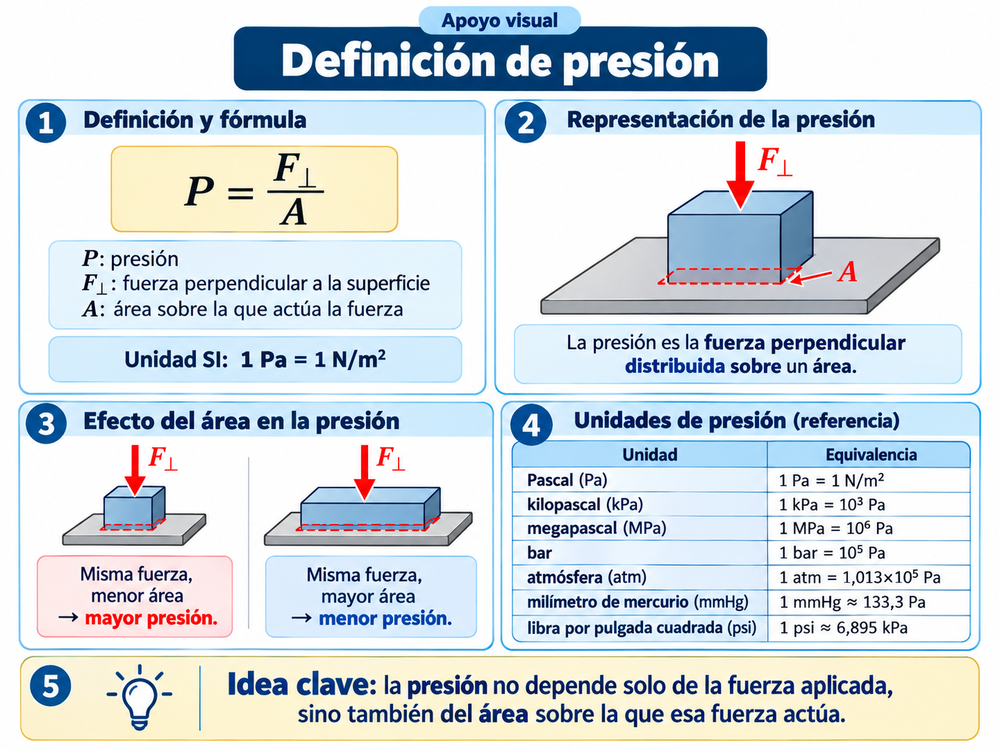
Doble clic sobre la imagen para verla ampliada.
Esta infografía resume la definición de presión como fuerza perpendicular distribuida sobre un área. También destaca la expresión \(P=F_\perp/A\), la unidad del Sistema Internacional \(Pa=N/m^2\), el efecto que tiene el área sobre el valor de la presión para una misma fuerza aplicada y una tabla de referencia con unidades de uso frecuente. Se incorpora aquí como cierre de la sección de presión, antes de avanzar a la presión en un punto y a la presión hidrostática.
10. Presión hidrostática
10.1 Equilibrio de una porción de fluido
La variación de presión con la profundidad se obtiene aplicando equilibrio a una pequeña columna de fluido. Sobre ella actúan la presión superior, la presión inferior y el peso. Como el fluido está en reposo, la suma de fuerzas verticales debe ser nula. Para densidad constante, el resultado es:
\[P_2-P_1=\rho g(h_2-h_1)\]
Si tomamos como punto de referencia la superficie, donde la presión es \(P_0\), y medimos una profundidad \(h\) hacia abajo, obtenemos \(P=P_0+\rho gh\). El incremento de presión se debe al peso del fluido situado por encima del punto.
10.2 Consecuencias de la ecuación hidrostática
A mayor profundidad, mayor presión para un mismo fluido.
A la misma profundidad dentro de un fluido conectado y en equilibrio, la presión es la misma.
La diferencia de presión depende de la diferencia vertical de altura, no del camino seguido entre los puntos.
Para un líquido de densidad uniforme, la forma del recipiente no modifica la presión a una profundidad dada.
Este último resultado suele parecer contraintuitivo: recipientes de formas muy distintas pueden producir la misma presión en el fondo si contienen el mismo líquido hasta la misma altura. La fuerza total sobre el fondo sí dependerá además del área.
10.3 Límites
La expresión simple supone densidad aproximadamente constante y un campo gravitatorio uniforme. En gases o en columnas de gran altura la densidad puede variar y el modelo debe modificarse.
Base bibliográfica: Tippens, presión del fluido; Young/Freedman, variación de presión con la profundidad.
Para una columna de líquido de densidad \(\rho\) y profundidad \(h\):
Apoyo visual · Equilibrio de presiones en un elemento de fluido
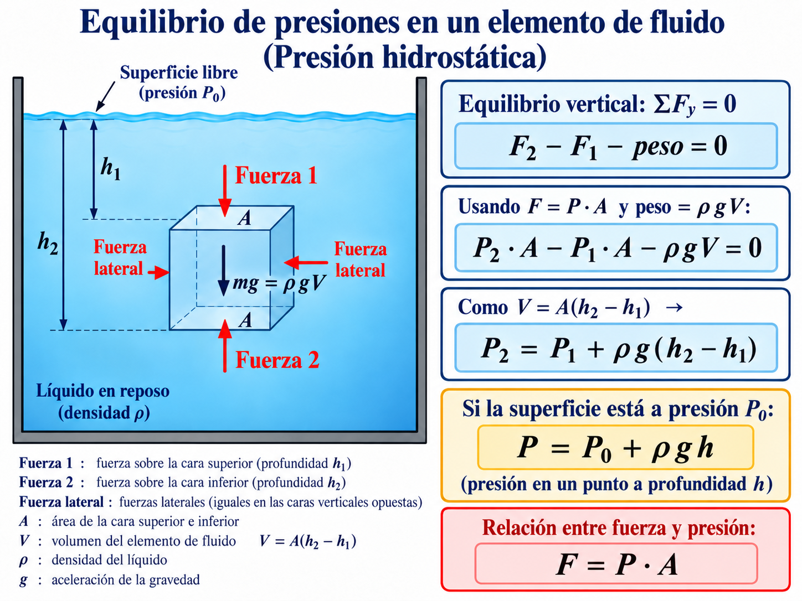
Doble clic sobre la imagen para verla ampliada.
Esta imagen se incorpora en el punto 10.1 para representar el equilibrio de un pequeño elemento de fluido en reposo. El esquema muestra la superficie libre a presión \(P_0\), las alturas \(h_1\) y \(h_2\), las fuerzas sobre las caras superior e inferior, el peso del elemento y la relación \(F=P\cdot A\). A partir del equilibrio vertical se obtiene la ecuación \(P_2=P_1+
ho g(h_2-h_1)\) y, como caso particular, la expresión \(P=P_0+
ho gh\).
\[\boxed{\Delta P=\rho gh}\]
Si sobre la superficie existe una presión \(P_0\):
\[\boxed{P=P_0+\rho gh}\]
10.3.4 Depende de
\(\rho\), \(g\), \(h\) y la presión sobre la superficie.
10.3.5 No depende directamente de
La forma del recipiente o el volumen total almacenado.
10.4 Simulación 4 · Presión hidrostática
Objetivo: comprobar de qué variables depende la presión en un fluido en reposo y distinguir presión superficial de incremento hidrostático.
10.4.1 ⚙ Cómo funciona
El sensor se ubica a una profundidad \(h\) dentro de un líquido de densidad \(\rho\). La presión en la superficie es \(P_0\). La simulación calcula la presión absoluta en el sensor.
\(P=P_0+\rho gh\)
10.4.2 👁 Qué debería observar
Al bajar el sensor, la presión aumenta linealmente con \(h\).
Un líquido más denso produce un aumento de presión mayor a igual profundidad.
Cambiar \(P_0\) desplaza el valor absoluto de presión, pero no cambia el incremento \(\rho gh\).
Las flechas laterales crecen con la profundidad.
10.4.3 💡 Por qué ocurre
Un punto más profundo debe soportar el peso de una columna mayor de fluido situada por encima. El peso por unidad de área de esa columna es justamente \(\rho gh\).
Prueba sugerida
10.4.4 🧪 Exploración
Compare la presión a 1 m y 2 m con la misma densidad. Luego vuelva a 1 m y aumente la densidad un 20 %. Verifique cuál de las dos modificaciones genera el mismo tipo de proporcionalidad.
11. Presión absoluta, atmosférica y manométrica
11.1 Presión absoluta y presión manométrica
La presión absoluta toma como referencia el vacío. La presión atmosférica es la debida al peso de la atmósfera. Muchos instrumentos industriales no informan la presión absoluta sino la diferencia respecto de la atmósfera, denominada presión manométrica:
Una presión manométrica igual a cero no significa ausencia de presión: significa que el sistema está a la misma presión que el ambiente. Una presión manométrica negativa corresponde a una presión absoluta menor que la atmosférica.
11.2 Manómetro de tubo en U
Un manómetro compara presiones mediante la diferencia de altura entre columnas de líquido. Al recorrer el fluido en reposo, la presión aumenta al descender y disminuye al ascender. Para un manómetro abierto simple, la diferencia entre la presión del sistema y la atmosférica es proporcional a \(\rho gh\).
11.3 Barómetro
El barómetro utiliza el equilibrio entre la presión atmosférica y una columna de líquido. En el barómetro de mercurio, la altura de la columna permite determinar \(P_{atm}\). El principio físico es el mismo que en hidrostática: una diferencia vertical de nivel corresponde a una diferencia de presión.
Aplicación industrial. Al interpretar una hoja de datos de un sensor o transmisor es indispensable identificar si informa presión absoluta, relativa/manométrica o diferencial.
Base bibliográfica: Tippens, medición de presión; Young/Freedman, manómetros y barómetro.
\[\boxed{P_{abs}=P_{man}+P_{atm}}\]
Una presión manométrica nula no significa vacío: significa que la presión absoluta coincide con la atmosférica. En planta se emplean manómetros, transmisores y sensores diferenciales.
12. Principio de Pascal
12.1 Transmisión de una variación de presión
El principio de Pascal establece que una variación de presión aplicada a un fluido confinado se transmite sin disminución a todos los puntos del fluido y a las paredes del recipiente, dentro del modelo ideal. La clave es que se transmite la presión, no una fuerza idéntica.
Si dos pistones están a la misma altura y despreciamos diferencias hidrostáticas, puede escribirse \(F_1/A_1=F_2/A_2\). Un área de salida mayor permite obtener una fuerza mayor.
12.2 ¿Se multiplica la energía?
No. La ventaja en fuerza se obtiene a costa del desplazamiento. Si el fluido es incompresible, el volumen desplazado por un pistón debe igualar aproximadamente al volumen que recibe el otro:
\[A_1\Delta x_1=A_2\Delta x_2\]
En una máquina ideal, \(F_1\Delta x_1=F_2\Delta x_2\). Por ello un pistón grande desarrolla más fuerza pero recorre una distancia menor. Tippens remarca esta compensación al analizar la ventaja mecánica de la prensa hidráulica.
Aplicación. El mismo principio aparece en gatos, frenos y actuadores hidráulicos. En equipos alimentarios puede encontrarse en mecanismos de prensado o accionamientos que utilizan circuitos hidráulicos.
Base bibliográfica: Tippens, prensa hidráulica; Young/Freedman, ley de Pascal.
Una variación de presión aplicada a un fluido confinado se transmite a todos los puntos del fluido.
\[\boxed{\frac{F_1}{A_1}=\frac{F_2}{A_2}}\]
12.3 Simulación 5 · Prensa hidráulica
Objetivo: visualizar la transmisión de presión en un fluido confinado y comprender cómo una prensa hidráulica multiplica fuerza.
12.3.1 ⚙ Cómo funciona
Una fuerza \(F_1\) actúa sobre un pistón de área \(A_1\). El fluido transmite esa presión al pistón de área \(A_2\), donde aparece \(F_2\).
\(P=F_1/A_1=F_2/A_2\)
12.3.2 👁 Qué debería observar
Si \(A_2>A_1\), la fuerza de salida puede ser mucho mayor que \(F_1\).
A igual \(F_1\), aumentar \(A_2\) aumenta \(F_2\).
Aumentar \(A_1\) manteniendo \(F_1\) disminuye la presión y, por tanto, \(F_2\).
12.3.3 💡 Por qué ocurre
Lo que se transmite idealmente es la presión, no la fuerza. Una misma presión actuando sobre un área mayor produce una fuerza mayor. No se crea energía: el pistón grande se desplaza una distancia menor.
Idealmente: \(A_1\Delta x_1=A_2\Delta x_2\)
Prueba sugerida
12.3.4 🧪 Exploración
Elija \(A_2=10A_1\). Observe la relación entre \(F_2\) y \(F_1\). Luego duplique ambas áreas conservando la misma relación y explique por qué la ventaja mecánica no cambia.
13. Principio de Arquímedes
13.1 Origen del empuje
El empuje no es una fuerza adicional “misteriosa”: surge de la variación de presión con la profundidad. En un cuerpo sumergido, la cara inferior se encuentra a mayor presión que la superior. Al sumar las fuerzas de presión sobre toda la superficie queda una resultante vertical hacia arriba.
Para un cuerpo sumergido total o parcialmente, esa resultante es igual al peso del fluido desplazado:
\[E=\rho_f gV_d\]
El empuje depende de la densidad del fluido y del volumen desplazado, no directamente de la masa del objeto. La masa del objeto determina, junto con el empuje, si habrá equilibrio o aceleración.
13.2 Condiciones de flotación
Si \(E>W\), la resultante inicial es hacia arriba.
Si \(E
Si un cuerpo flota en equilibrio, \(E=W\) y sólo se sumerge el volumen necesario para desplazar un peso de fluido igual al suyo.
Para un cuerpo homogéneo flotando puede obtenerse \(V_d/V=\rho_o/\rho_f\). Por ello, cuanto menor es la densidad del objeto respecto del líquido, menor es la fracción de volumen que necesita permanecer sumergida.
Aplicación alimentaria. El principio interviene en separaciones por densidad, flotación de partículas, control de concentración y métodos de determinación de densidad.
Base bibliográfica: Tippens y Serway, principio de Arquímedes y fuerza de flotación.
\[\boxed{E=\rho_f gV_d}\]
El empuje equivale al peso del fluido desplazado. Para un cuerpo flotando en equilibrio, \(E=W\).
13.3 Simulación 6 · Flotación
Objetivo: relacionar el empuje con el fluido desplazado y usar la comparación de densidades para predecir flotación o hundimiento.
13.3.1 ⚙ Cómo funciona
El objeto tiene densidad \(\rho_o\) y volumen \(V\), y se coloca en un fluido de densidad \(\rho_f\). La simulación compara el peso con el empuje de Arquímedes.
\(E=\rho_f gV_d\) · \(W=\rho_o gV\)
13.3.2 👁 Qué debería observar
Si \(\rho_o<\rho_f\), el objeto flota parcialmente sumergido.
Si \(\rho_o=\rho_f\), aparece equilibrio neutro.
Si \(\rho_o>\rho_f\), el objeto se hunde.
Para un cuerpo homogéneo, cambiar sólo su volumen no cambia el criterio de flotar o hundirse.
13.3.3 💡 Por qué ocurre
El empuje es igual al peso del fluido desplazado. Un objeto que flota ajusta su volumen sumergido hasta que \(E=W\). Por eso la fracción sumergida depende de la razón de densidades.
En flotación: \(V_d/V=\rho_o/\rho_f\)
Prueba sugerida
13.3.4 🧪 Exploración
Use \(\rho_o=800\,kg/m^3\) y \(\rho_f=1000\,kg/m^3\). Prediga la fracción sumergida. Luego cambie el volumen del objeto y verifique qué magnitudes cambian y cuál permanece igual.
14. De la hidrostática a la hidrodinámica
14.1 Describir un fluido en movimiento
En un sólido rígido suele bastar con seguir la posición y velocidad del cuerpo. En un fluido, distintas regiones pueden tener velocidades diferentes al mismo tiempo. Por ello se utiliza un campo de velocidades \(\vec v(x,y,z,t)\).
14.2 Flujo estacionario
Un flujo es estacionario cuando las propiedades observadas en un punto fijo no cambian con el tiempo, aunque las partículas estén moviéndose. Esto no significa que la velocidad sea igual en todos los puntos, sino que el patrón espacial se mantiene.
14.3 Líneas de corriente, flujo laminar y turbulento
Las líneas de corriente son curvas tangentes al vector velocidad. En flujo laminar las trayectorias se mantienen ordenadas y las capas se deslizan de manera relativamente regular. Cuando aumenta la importancia de los efectos inerciales pueden aparecer fluctuaciones, remolinos y mezcla intensa: hablamos de flujo turbulento.
Tippens utiliza el flujo laminar como hipótesis simplificadora para desarrollar continuidad y Bernoulli. Serway señala que el flujo turbulento es irregular y contiene regiones vorticosas. En aplicaciones reales, el régimen influye en pérdidas de energía y también en transferencia de calor y de materia.
14.4 Hipótesis del fluido ideal
Para construir las ecuaciones elementales supondremos, según el problema, flujo estacionario, densidad constante, incompresibilidad y viscosidad despreciable. Más adelante retiraremos parcialmente estas hipótesis al estudiar fluidos reales.
Base bibliográfica: Tippens, flujo de fluidos; Serway, dinámica de fluidos.
Para construir modelos simples de fluidos en movimiento declaramos hipótesis como flujo estacionario, densidad constante, incompresibilidad y viscosidad despreciable cuando corresponda.
flujo estacionariofluido incompresibledensidad constanteviscosidad despreciable en el modelo ideal
14.5 Flujo laminar
Las partículas siguen trayectorias ordenadas y el campo de velocidades varía regularmente.
14.6 Flujo turbulento
Aparecen fluctuaciones, remolinos y mezcla intensa. La turbulencia modifica pérdidas de energía, transferencia térmica y transporte de materia.
15. Caudal volumétrico y caudal másico
15.1 Del movimiento local a una magnitud de proceso
En una instalación industrial suele importar menos la velocidad de una partícula individual que la cantidad total de producto que atraviesa una sección por unidad de tiempo. Esa magnitud es el caudal volumétrico.
Si durante un intervalo \(\Delta t\) un frente de fluido avanza una distancia \(\Delta x=v\Delta t\) a través de una sección uniforme de área \(A\), el volumen transportado es \(\Delta V=A\Delta x\). Entonces:
\[Q=\frac{\Delta V}{\Delta t}=Av\]
En una tubería real la velocidad no suele ser uniforme sobre toda la sección. En ese caso \(v\) representa una velocidad media equivalente que produce el mismo caudal.
15.2 Caudal másico
Multiplicando el caudal volumétrico por la densidad se obtiene la masa transportada por unidad de tiempo:
\[\dot m=\rho Q\]
Esta magnitud es especialmente útil en balances de materia y en procesos donde la densidad puede variar.
Base bibliográfica: Tippens, gasto o razón de flujo; formulación estándar de conservación de masa.
\[\boxed{Q=\frac{\Delta V}{\Delta t}=Av}\]
\[\boxed{\dot m=\rho Q=\rho Av}\]
Magnitudes de flujo
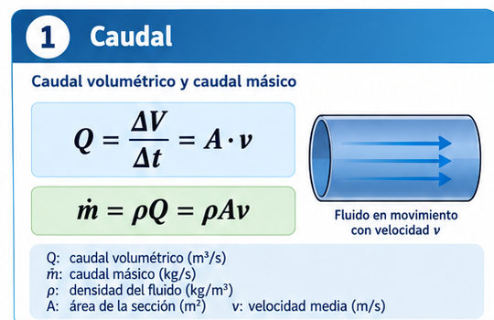
15.2.1 Caudal volumétrico y másico
Complementa las definiciones de \(Q\) y \(\dot m\) mediante un esquema simple de conducción en tubería.
16. Conservación de masa y continuidad
16.1 Continuidad como expresión de conservación de masa
La ecuación de continuidad no es una relación geométrica aislada; expresa que la masa se conserva. Considere una porción de tubería delimitada por dos secciones. En régimen estacionario, si no hay acumulación de masa dentro del volumen considerado, la masa que entra por unidad de tiempo debe ser igual a la que sale.
Para un líquido modelado como incompresible, \(\rho_1=\rho_2\), y la densidad se cancela. Así obtenemos \(A_1v_1=A_2v_2\).
16.2 Interpretación del estrechamiento
Si el área disminuye, la velocidad media debe aumentar para transportar el mismo volumen por unidad de tiempo. Como el área circular depende del cuadrado del diámetro, reducir el diámetro a la mitad reduce el área a la cuarta parte y, a caudal constante, multiplica la velocidad por cuatro.
Error frecuente. La ecuación de continuidad no afirma que toda reducción de diámetro mantenga automáticamente el mismo caudal. Eso ocurre dentro del modelo de flujo estacionario de una misma corriente; en una instalación real el caudal final también depende de la bomba, las pérdidas y las condiciones de contorno.
Base bibliográfica: Tippens, flujo de fluidos y relación \(vA\); Serway, continuidad.
\[\boxed{\rho_1A_1v_1=\rho_2A_2v_2}\]
Para un fluido incompresible:
Conducto variable
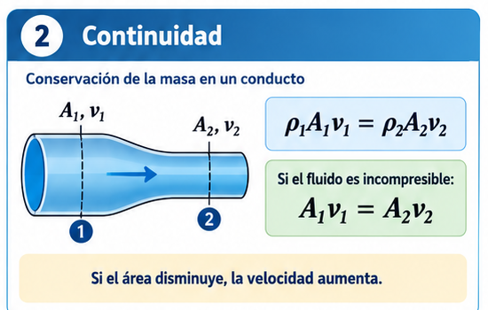
16.2.1 Conservación de masa
El estrechamiento del conducto ayuda a visualizar por qué, para un fluido incompresible, si el área disminuye la velocidad debe aumentar.
\[\boxed{A_1v_1=A_2v_2=Q}\]
16.3 Simulación 7 · Continuidad
Objetivo: comprobar la conservación de caudal en un fluido incompresible y visualizar el efecto de cambiar el diámetro de una tubería.
16.3.1 ⚙ Cómo funciona
Se fija un caudal volumétrico \(Q\) que debe atravesar dos secciones de diámetros \(D_1\) y \(D_2\). La simulación calcula las áreas y las velocidades medias.
\(Q=A_1v_1=A_2v_2\)
16.3.2 👁 Qué debería observar
Si disminuye el diámetro, aumenta la velocidad.
La variación es fuerte porque \(A\propto D^2\).
Para el mismo diámetro, aumentar \(Q\) aumenta proporcionalmente la velocidad.
El producto \(Av\) permanece igual en ambas secciones.
16.3.3 💡 Por qué ocurre
En régimen estacionario no puede acumularse masa indefinidamente dentro del conducto. Si por una sección menor debe pasar el mismo volumen por unidad de tiempo, el fluido tiene que desplazarse más rápido.
\(v_2/v_1=A_1/A_2=(D_1/D_2)^2\)
Prueba sugerida
16.3.4 🧪 Exploración
Fije \(D_1=80\,mm\) y \(D_2=40\,mm\). Antes de mirar el resultado, prediga la razón \(v_2/v_1\). Luego compruébela y explique por qué no es simplemente 2.
17. Ecuación de Bernoulli
17.1 Bernoulli como balance de energía mecánica
La ecuación de Bernoulli puede deducirse aplicando el teorema trabajo–energía a una porción de fluido. Las fuerzas de presión realizan trabajo al empujar el fluido, mientras que cambian su energía cinética y su energía potencial gravitatoria. Para un flujo ideal, estacionario e incompresible, sin disipación viscosa apreciable, se obtiene:
\[P+\frac12\rho v^2+\rho gh=\text{constante a lo largo de una línea de corriente}\]
Los tres términos tienen unidades de energía por unidad de volumen, equivalentes a presión:
\(P\)
Trabajo de las fuerzas de presión por unidad de volumen.
\(\tfrac12\rho v^2\)
Energía cinética por unidad de volumen.
\(\rho gh\)
Energía potencial gravitatoria por unidad de volumen.
17.2 Forma de “altura de energía”
Dividiendo toda la ecuación por \(\rho g\) puede escribirse:
Cada término tiene unidades de longitud y suele interpretarse como una “altura” asociada a presión, velocidad o posición. Esta forma facilita la conexión posterior con bombas y pérdidas de carga.
17.3 Condiciones de validez
Bernoulli no debe aplicarse mecánicamente. La forma elemental supone flujo estacionario, densidad constante y pérdidas viscosas despreciables. Si hay una bomba, una turbina o pérdidas significativas, deben incorporarse términos adicionales en el balance de energía.
Interpretación correcta. En una tubería horizontal ideal, si continuidad obliga a aumentar la velocidad en un estrechamiento, la presión estática puede disminuir. No es correcto generalizar “más velocidad implica siempre menos presión” fuera de las hipótesis del modelo.
Base bibliográfica: Tippens, ecuación de Bernoulli y su deducción mediante trabajo y energía; Serway, ecuación de Bernoulli.
Cada término tiene unidades de presión y representa una contribución mecánica por unidad de volumen. Bernoulli es una forma de conservación de energía para un modelo ideal.
Balance de energía
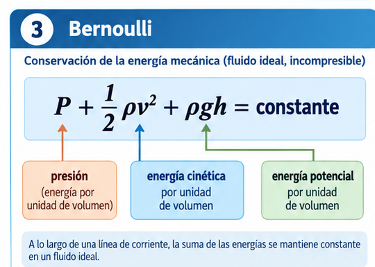
17.3.1 Términos de Bernoulli
Señala claramente los significados energéticos de los tres términos de la ecuación de Bernoulli en un fluido ideal e incompresible.Aplicaciones clásicas
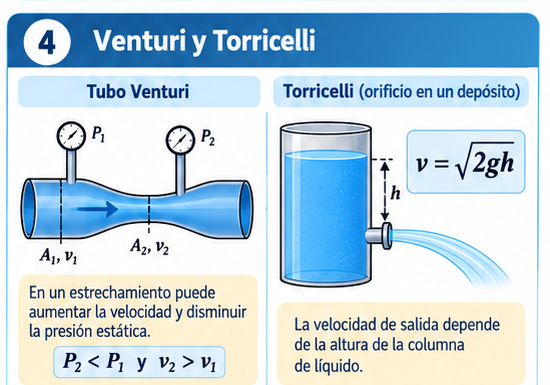
17.3.2 Venturi y Torricelli
Este apoyo conecta la teoría con dos ejemplos muy utilizados para interpretar presión, velocidad y descarga de líquidos.
Importante. “A mayor velocidad, menor presión” no es una ley universal; es una consecuencia bajo condiciones específicas del modelo.
17.4 Simulación 8 · Bernoulli y Venturi
Objetivo: integrar continuidad y Bernoulli para analizar cómo se relacionan diámetro, velocidad, presión y altura en un conducto ideal.
17.4.1 ⚙ Cómo funciona
Primero se usa continuidad para obtener \(v_1\) y \(v_2\) a partir de \(Q\) y los diámetros. Luego se aplica Bernoulli entre las dos secciones para calcular \(P_2\).
En una tubería horizontal, un estrechamiento aumenta la velocidad.
En el modelo ideal, ese aumento suele acompañarse de una disminución de la presión estática.
Elevar la sección 2 consume parte de la energía disponible y tiende a reducir \(P_2\).
Al aumentar \(Q\), crecen los términos cinéticos y las diferencias de presión pueden ser mayores.
17.4.3 💡 Por qué ocurre
Bernoulli expresa un intercambio entre energía asociada a presión, movimiento y altura. El resultado no significa que “más velocidad siempre implica menos presión”: esa conclusión requiere las hipótesis del modelo y comparar puntos del mismo flujo.
La simulación no incluye pérdidas viscosas ni bombas.
Prueba sugerida
17.4.4 🧪 Exploración
Comience con \(h_2-h_1=0\) y reduzca \(D_2\). Observe \(v_2\) y \(P_2\). Después mantenga los diámetros y aumente la altura de la sección 2. Compare qué forma de energía está cambiando en cada caso.
18. Venturi y Torricelli
18.1 Tubo Venturi
Un Venturi combina dos principios: conservación de masa y conservación de energía mecánica. En la garganta de menor área, continuidad exige mayor velocidad. Si el conducto es horizontal y las pérdidas son pequeñas, Bernoulli relaciona ese aumento de velocidad con una disminución de presión.
La diferencia \(P_1-P_2\) puede medirse y utilizarse para inferir el caudal. Por eso el efecto Venturi constituye un ejemplo importante de cómo una variable difícil de medir directamente —la velocidad media— puede obtenerse a partir de una diferencia de presión.
18.2 Teorema de Torricelli
Considere un depósito abierto cuya superficie libre es mucho mayor que el orificio de salida. La velocidad de descenso de la superficie puede despreciarse frente a la velocidad del chorro y tanto la superficie como la salida están aproximadamente a presión atmosférica. Aplicando Bernoulli entre ambos puntos resulta:
\[v=\sqrt{2gh}\]
La expresión coincide con la rapidez adquirida en caída libre después de descender una altura \(h\). Esa semejanza muestra que el fluido convierte energía potencial gravitatoria en energía cinética. En un depósito real el caudal será menor que el ideal debido a contracción y pérdidas viscosas.
Base bibliográfica: Tippens, aplicaciones de Bernoulli; Serway, Venturi y ley de Torricelli.
18.3 Venturi
Continuidad y Bernoulli permiten relacionar un estrechamiento con cambios de velocidad y presión.
18.4 Torricelli
Para un depósito abierto, grande respecto del orificio y despreciando pérdidas:
\[\boxed{v=\sqrt{2gh}}\]
19. Fluidos reales, viscosidad y pérdidas de carga
19.1 ¿Por qué Bernoulli ideal no alcanza?
En una tubería horizontal de sección constante, Bernoulli ideal predeciría la misma presión en dos puntos si la velocidad y la altura son iguales. Sin embargo, un fluido viscoso necesita una diferencia de presión para mantener el movimiento. Young y Freedman explican que la viscosidad hace que la velocidad sea nula en la pared y máxima hacia el centro; las fuerzas viscosas entre capas se oponen al deslizamiento y requieren una caída de presión a lo largo del conducto.
19.2 Condición de no deslizamiento
El modelo usual para un fluido viscoso supone que la capa en contacto con una pared sólida tiene la misma velocidad que la pared. En una tubería fija esa velocidad es cero. Desde la pared hacia el centro se desarrolla un perfil de velocidades. Por eso el valor \(v\) usado en \(Q=Av\) representa normalmente una velocidad media.
19.3 Sensibilidad al diámetro
En flujo laminar newtoniano por un tubo cilíndrico, la relación de Poiseuille muestra que el caudal es extremadamente sensible al radio: para una misma diferencia de presión, \(Q\propto R^4\). Sin desarrollar aquí toda la ecuación, esta dependencia permite comprender por qué pequeños estrechamientos, incrustaciones o depósitos pueden aumentar fuertemente la resistencia al flujo.
19.4 Pérdida de energía mecánica
La fricción viscosa transforma energía mecánica en energía interna. En ingeniería esta disminución se representa mediante una pérdida de carga. Las pérdidas distribuidas se acumulan a lo largo de la tubería; las localizadas se asocian a accesorios y cambios geométricos. Por ello una bomba debe aportar energía no sólo para vencer diferencias de altura o presión, sino también para compensar pérdidas.
19.5 Régimen de flujo y Reynolds
El número de Reynolds compara cualitativamente la importancia de inercia y viscosidad. Un valor bajo favorece flujo laminar; al aumentar pueden aparecer transición y turbulencia. En alimentos no newtonianos la utilización de un Reynolds convencional requiere cautela porque la viscosidad efectiva puede depender de la condición de flujo.
Aplicación alimentaria. En productos viscosos, enfriamiento, aumento de sólidos, reducción del diámetro efectivo o ensuciamiento pueden incrementar sustancialmente la caída de presión y modificar el caudal de operación.
Base bibliográfica: Young/Freedman, flujo viscoso en tubos y turbulencia; Serway, viscosidad y flujo real; Giancoli, viscosidad y flujo en tubos.
En una instalación real hay disipación debido a la viscosidad, el rozamiento con las paredes y la presencia de accesorios. La energía mecánica disponible disminuye a lo largo de la conducción.
Modelo ideal vs. real
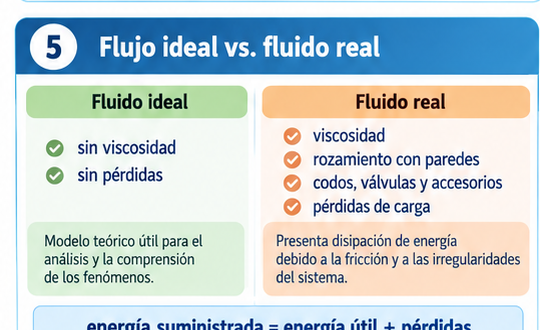
19.5.1 Viscosidad y pérdidas
Resume por qué el modelo ideal no alcanza para describir una instalación real: aparecen viscosidad, rozamiento con paredes y pérdidas de carga.Procesos alimentarios
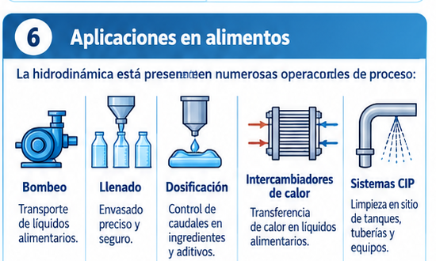
19.5.2 Aplicación en planta
Estos ejemplos ayudan a vincular la hidrodinámica con operaciones reales de bombeo, llenado, dosificación, intercambio de calor y sistemas CIP.
19.6 Condición de no deslizamiento
En una pared fija, la velocidad del fluido en contacto con la superficie tiende a ser nula. Hacia el interior de la conducción aparece un perfil de velocidades.
19.7 Pérdidas distribuidas y localizadas
19.7.1 Distribuidas
Se acumulan a lo largo de la tubería por rozamiento viscoso.
19.7.2 Localizadas
Se asocian a codos, válvulas, filtros, entradas, salidas y cambios de sección.
19.8 Número de Reynolds
\[\boxed{Re=\frac{\rho vD}{\mu}}\]
Lo usaremos cualitativamente para comparar efectos inerciales y viscosos. Para alimentos no newtonianos debe interpretarse con cautela.
19.9 Influencia de la temperatura y composición
La viscosidad real puede cambiar con temperatura, concentración de sólidos, formulación y estructura del alimento. Por eso una línea diseñada con agua como fluido de prueba no necesariamente reproduce el comportamiento de un jarabe, una salsa o un puré.
Lectura de proceso. Si un producto no circula como se esperaba, puede deberse a mayor viscosidad, menor temperatura, ensuciamiento, diámetro efectivo reducido o pérdidas localizadas elevadas, además de la selección de la bomba.
Infografía · Hidrodinámica
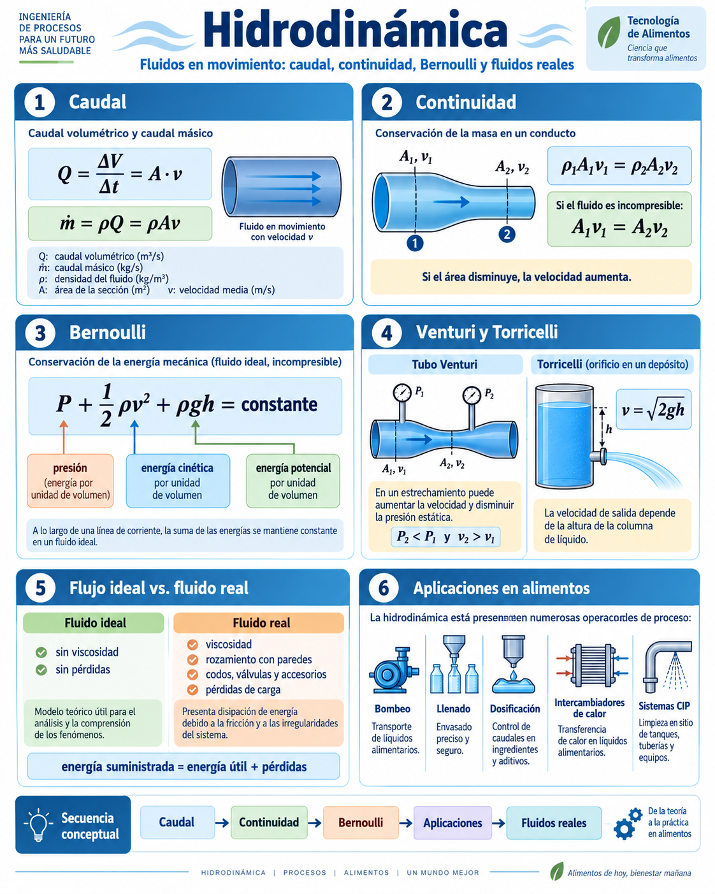
Doble clic para ampliar.
Esta síntesis integra caudal, continuidad, Bernoulli, Venturi y Torricelli con el contraste entre fluido ideal y fluido real. El bloque final muestra cómo esas ideas aparecen en bombeo, llenado, dosificación, intercambio térmico y sistemas CIP.
20. Sección complementaria · Manejo de polvos y tolvas
Muchos productos alimentarios se almacenan y transportan como partículas sólidas: harina, azúcar, cacao, sal, almidón, leche en polvo y cereales. Estos materiales pueden fluir como conjunto, pero no son fluidos en el sentido de la mecánica de fluidos.
Enfoque visual de la sección. A continuación se distribuyen recortes de la infografía de polvos y tolvas en los mismos puntos conceptuales donde se desarrolla la teoría, para reforzar la comprensión visual del fenómeno.
Naturaleza del material
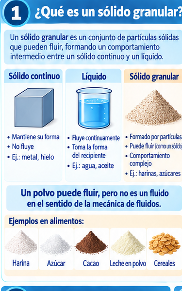
Sólido granular
Introduce la comparación entre sólido continuo, líquido y sólido granular, reforzando la idea de que un polvo puede fluir sin ser un fluido en el sentido estricto de la mecánica de fluidos.Propiedades básicas
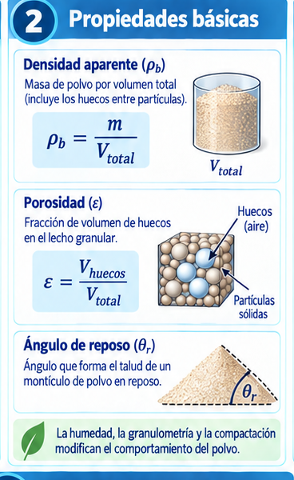
Densidad aparente, porosidad y ángulo de reposo
Este recorte sirve como apoyo visual para las definiciones de \(\rho_b\), \(\varepsilon\) y \(\theta_r\), además de mostrar que la humedad y la compactación modifican el comportamiento del polvo.Descarga
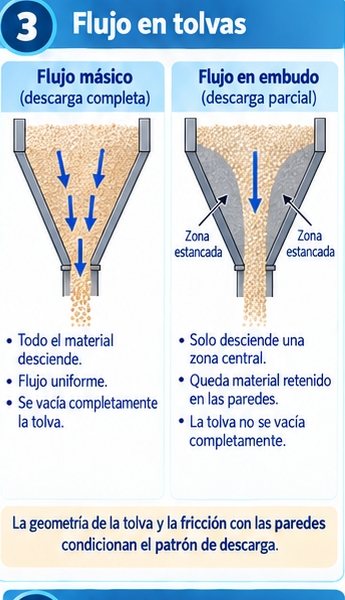
Flujo másico y flujo en embudo
Ayuda a visualizar los dos patrones de descarga más importantes y el papel que cumplen la geometría de la tolva y la fricción en paredes.Fallas frecuentes
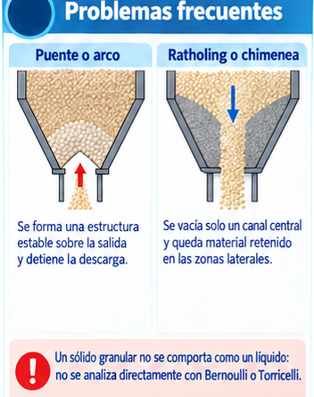
Puente y ratholing
Hace visible por qué una tolva puede dejar de descargar a pesar de seguir conteniendo producto en su interior.Variables de operación
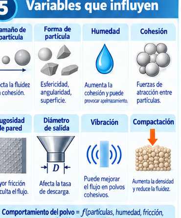
Variables que influyen
Resume el efecto del tamaño y forma de partícula, humedad, cohesión, rugosidad de pared, diámetro de salida, vibración y compactación.Aplicaciones
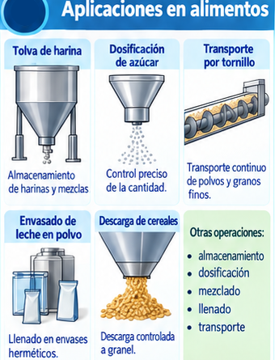
Aplicaciones en alimentos
Conecta esta ampliación con operaciones concretas: tolvas de harina, dosificación de azúcar, transporte por tornillo, envasado de leche en polvo y descarga de cereales.
Idea central. Un sólido granular combina comportamiento sólido, fricción entre partículas, cohesión, huecos internos y capacidad de fluir. Por eso una tolva de harina no debe analizarse como un tanque de agua.
20.1 Densidad aparente
Para un polvo interesa distinguir la densidad de la partícula de la densidad del lecho granular. La densidad aparente se define como:
\[\boxed{\rho_b=\frac{m}{V_{total}}}\]El volumen total incluye partículas y huecos entre ellas.
La densidad aparente puede cambiar por vibración, compactación, humedad, granulometría o aire retenido.
La porosidad influye en la aireación, la compactación y la respuesta del material durante el almacenamiento y la descarga.
20.3 Ángulo de reposo
Al dejar caer un polvo sobre una superficie se forma un montículo. El ángulo del talud respecto de la horizontal se denomina ángulo de reposo \(\theta_r\). Como criterio cualitativo, ángulos pequeños suelen asociarse con mayor facilidad de flujo y ángulos grandes con materiales más cohesivos o menos fluidos.
20.4 Flujo másico y flujo en embudo
20.4.1 Flujo másico
Todo el material se desplaza durante la descarga. Tiende a reducir zonas estancadas y diferencias de tiempo de residencia.
20.4.2 Flujo en embudo
Se mueve principalmente una región central y queda material inmóvil cerca de las paredes. Puede aumentar segregación y retención.
20.5 Problemas frecuentes
20.5.1 Puente o arco
Las partículas forman una estructura estable sobre la salida y detienen la descarga, aun cuando quede producto en la tolva.
20.5.2 Ratholing o chimenea
Se forma un canal central mientras el material lateral queda retenido. El flujo puede detenerse antes de que la tolva se vacíe.
Error frecuente. Bernoulli y Torricelli no describen directamente la descarga de un sólido granular. En un polvo intervienen contactos entre partículas, fricción contra paredes, cohesión y geometría de la salida.
20.6 Variables que controlan el comportamiento
20.6.1 Partículas
Tamaño, forma, granulometría y rugosidad superficial.
20.6.2 Producto
Humedad, cohesión, compactación y aireación.
20.6.3 Equipo
Ángulo de pared, rugosidad, diámetro de salida y vibración.
\[\boxed{\text{Comportamiento del polvo}=f(\text{partículas, humedad, fricción, cohesión, geometría})}\]
20.7 Aplicaciones en alimentos
El manejo de polvos aparece en almacenamiento en silos y tolvas, dosificación de ingredientes, transporte por tornillo sin fin, mezclado de formulaciones secas, llenado de envases y transporte neumático.
20.8 Simulación 9 · Tolva de sólidos granulares
Modelo didáctico cualitativo. No reemplaza un cálculo de diseño industrial. Permite explorar cómo la salida, el tamaño de partícula, la inclinación, la cohesión y la fricción pueden favorecer flujo másico, flujo en embudo, puente o ratholing.
Objetivo: explorar cualitativamente cómo la geometría de una tolva y las propiedades del polvo pueden favorecer una descarga estable o provocar problemas de flujo.
20.8.1 ⚙ Cómo funciona
Este es un modelo didáctico cualitativo. Los controles modifican el diámetro de salida \(D\), el tamaño de partícula \(d_p\), la inclinación de las paredes, la cohesión y la fricción con la pared. A partir de esas tendencias, el programa clasifica el comportamiento como flujo másico, flujo en embudo, puente o ratholing.
No sustituye ensayos de caracterización ni métodos de diseño industrial de tolvas.
20.8.2 👁 Qué debería observar
Una salida grande respecto del tamaño de partícula reduce la tendencia a formar puentes.
Mayor cohesión favorece arcos, apelmazamiento y descarga irregular.
Mayor fricción con la pared favorece zonas estancadas y flujo en embudo.
Paredes más empinadas tienden a facilitar que el material próximo a ellas también descienda.
20.8.3 💡 Por qué ocurre
Un sólido granular transmite fuerzas por contactos entre partículas y contra las paredes. La fricción y la cohesión pueden formar estructuras capaces de sostener parte del peso del material. Por eso un polvo no se descarga como un líquido y no puede analizarse directamente con Bernoulli o Torricelli.
Variable clave cualitativa: relación \(D/d_p\)
Prueba sugerida
20.8.4 🧪 Exploración
Parta de una salida amplia y baja cohesión. Reduzca progresivamente \(D\) y luego aumente la cohesión. Observe cuándo cambia el patrón de descarga. Después aumente la inclinación de la pared y evalúe si mejora el flujo.
Infografía · Manejo de polvos y tolvas
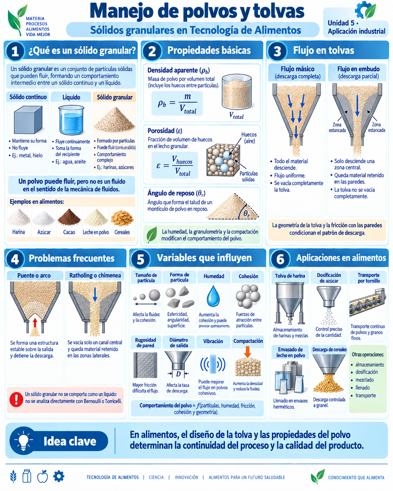
Doble clic para ampliar.
La infografía resume por qué un sólido granular requiere un modelo distinto del de un líquido. Presenta densidad aparente, porosidad y ángulo de reposo, compara flujo másico con flujo en embudo y muestra dos fallas típicas de descarga: puente y ratholing. El cierre vincula estas propiedades con variables reales de proceso —humedad, tamaño de partícula, cohesión, rugosidad y geometría— y con operaciones de almacenamiento, dosificación, envasado y transporte.
21. Aplicaciones integradas en Tecnología de Alimentos
21.1 Integrar los modelos en una operación real
En una planta los fenómenos estudiados no aparecen aislados. Una misma línea de proceso puede involucrar simultáneamente presión hidrostática en un tanque, conversión de energía en una bomba, conservación de masa en cambios de diámetro, pérdidas por viscosidad y variaciones de propiedades con temperatura.
Tanque de alimentación
La altura de producto determina parte de la presión disponible en la succión. La densidad relaciona nivel, masa almacenada y presión hidrostática.
Bomba y tubería
El caudal debe satisfacer continuidad y la bomba debe aportar suficiente energía para vencer desniveles, diferencias de presión y pérdidas.
Válvulas y accesorios
Modifican el campo de velocidades y generan pérdidas localizadas. El efecto puede ser importante en productos viscosos.
Intercambiador
La velocidad y el régimen de flujo influyen en la transferencia térmica, mientras que la temperatura modifica a su vez la viscosidad del alimento.
El objetivo de esta unidad no es diseñar completamente una instalación, sino reconocer qué principios físicos intervienen y qué hipótesis deben declararse antes de usar una ecuación. Esta lectura integrada prepara el camino para asignaturas posteriores de operaciones unitarias, transferencia y control de procesos.
Síntesis aplicada construida a partir de los modelos de mecánica de fluidos desarrollados en la bibliografía base.
21.1.1 Tanques
Presión hidrostática, nivel y fuerzas sobre paredes y fondos.
21.1.2 Bombeo
Caudal, presión, viscosidad y pérdidas.
21.1.3 Llenado y dosificación
Control de caudal en líquidos y comportamiento de sólidos granulares.
21.1.4 Intercambiadores
Velocidad, régimen de flujo, viscosidad y transferencia térmica.
21.1.5 CIP
Condiciones hidráulicas para limpieza de superficies internas.
21.1.6 Tolvas y silos
Fluidez, descarga, compactación, segregación y retención de polvos.
22. Errores frecuentes
Densidad ≠ peso específico
\(kg/m^3\) frente a \(N/m^3\).
Manométrica cero ≠ vacío
Significa igualdad con la presión atmosférica.
Bernoulli tiene hipótesis
No debe aplicarse ignorando viscosidad o pérdidas cuando son relevantes.
Todos los alimentos ≠ newtonianos
Muchos presentan comportamiento no lineal o dependiente del tiempo.
Polvo ≠ líquido
Una harina que fluye sigue siendo un sólido granular.
23. Resumen final
Concepto
Relación
Lectura física
Esfuerzo normal
\(\sigma=F_\perp/A\)
Fuerza normal por área
Esfuerzo cortante
\(\tau=F_\parallel/A\)
Fuerza tangencial por área
Viscosidad
\(\tau=\mu dv/dy\)
Resistencia interna al flujo
Densidad
\(\rho=m/V\)
Masa por volumen
Hidrostática
\(P=P_0+\rho gh\)
Presión con profundidad
Caudal
\(Q=Av\)
Volumen por tiempo
Continuidad
\(\rho Av=cte\)
Conservación de masa
Bernoulli
\(P+\frac12\rho v^2+\rho gh=cte\)
Balance mecánico ideal
Densidad aparente
\(\rho_b=m/V_{total}\)
Masa de polvo por volumen ocupado
Porosidad
\(\varepsilon=V_{huecos}/V_{total}\)
Fracción de huecos en el lecho granular
24. Bibliografía de referencia
Tippens, P. Física: conceptos y aplicaciones, 7.ª edición revisada.
Giancoli, D. C. Física: principios con aplicaciones, Vol. 1.
Serway, R. A. y Jewett, J. W. Física para ciencias e ingeniería, Vol. 1.
Young, H. D. y Freedman, R. A. Física universitaria, Vol. 1.
Programa Analítico y Planificación · Física Aplicada a la Tecnología de Alimentos.
Nota. La sección de polvos y tolvas se incorpora como ampliación aplicada a Tecnología de Alimentos; no forma parte del núcleo clásico de mecánica de fluidos desarrollado en la bibliografía base.
Criterio de esta versión. El desarrollo teórico ampliado usa a Tippens como hilo conductor para elasticidad y mecánica de fluidos; Serway y Young/Freedman refuerzan la transición sólido–fluido, la interpretación de viscosidad, flujo laminar/turbulento y fluidos reales; Giancoli se utiliza como apoyo para viscosidad y flujo en tubos. La sección de polvos y tolvas se conserva como ampliación aplicada de la versión suministrada y se mantiene separada del núcleo bibliográfico clásico.